전기기능사 (2006-01-22 기출문제)
1과목: 전기 이론
1. 다음 설명 중 잘못된 것은?
- 양전하를 많이 가진 물질은 전위가 낮다.
- 1초 동안에 1[C]의 전기량이 이동하면 전류는 1[A]이다.
- 전위차가 높으면 높을수록 전류는 잘 흐른다.
- 전류의 방향은 전자의 이동방향과는 반대방향으로 정한다.
(정답률: 65%)

2. 전극의 불순물로 인하여 기전력이 감소하는 현상을 무엇이라 하는가?
- 국부작용
- 성극작용
- 전기분해
- 감극현상
(정답률: 65%)
3. Å1=Å1∠θ1, Å2=Å2∠θ2일 때 두 벡터의 곱 A를 구하는 식은?
- Å1Å2=θ1θ2
- Å1Å2=θ1+θ2
- Å1+Å2=θ1θ2
- Å1+Å2=θ1+θ2
(정답률: 55%)
4. 비오사바르의 법칙은 어느 관계를 나타내는가?
- 기자력과 자장
- 전위와 자장
- 전류와 자장
- 기자력과 자속밀도
(정답률: 68%)
5. 기전력 1.5[V], 내부저항 0.15[Ω]의 전지 10개를 직렬로 접속한 전원에 저항 4.5[Ω]의 전구를 접속하면 전구에 흐르는 전류는 몇[A]가 되겠는가?
- 0.25
- 2.5
- 5
- 7.5
(정답률: 66%)
6. L[H]의 코일에 I[A]의 전류가 흐를 때 저축되는 에너지[J]를 나타내는 것은?
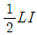
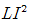
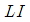
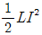
(정답률: 83%)
7. "자기저항은 자기회로의 길이에 ( ① ) 하고 자로의 단면적과 투자율의 곱에 ( ② )한다." ( )에 들어갈 말은?
- ① 비례 ② 반비례
- ① 반비례 ② 비례
- ① 비례 ② 비례
- ① 반비례 ② 반비례
(정답률: 72%)
8. 고유저항 의 단위로 맞는 것은?
- Ω
- Ω·m
- AT/Wb
- Ω-1
(정답률: 71%)
9. 교류에서 무효전력 Pr[VAR]은?
- VI
- VIcosθ
- VIsinθ
- VItanθ
(정답률: 67%)
10. 자체 인덕턴스의 단위[H]와 같은 단위를 나타낸 것은?
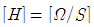
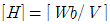
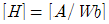
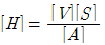
(정답률: 54%)
11. 공기중 자장의 세기 20[AT/m]인 곳에 8 × 10-3[Wb]의 자극을 놓으면 작용하는 힘[N]은?
- 0.16
- 0.32
- 0.43
- 0.56
(정답률: 75%)
12. 유전물 Ɛ의 유전체 내에 있는 전하 Q[C]에서 나오는 전기력선수는 얼마인가?(일부 컴퓨터 문제로 2번 3번 4번의 특수문자가 보이지 않을수 있습니다.)
- Q
- Q/Ɛ0
- Q2/Ɛ
- Q/Ɛ
(정답률: 55%)
13. 콘덴서 중 극성을 가지고 있는 콘덴서로서 교류 회로에 사용할 수 없는 것은?
- 마일러 콘덴서
- 마이카 콘덴서
- 세라믹 콘덴서
- 전해 콘덴서
(정답률: 64%)
14. 3[Ω]의 저항 5개, 4[Ω]의 저항 5개, 5[Ω]의 저항 3개가 있다. 이들을 모두 직렬 접속할 때 합성저항[Ω]은?
- 75
- 50
- 45
- 35
(정답률: 84%)
15. 어느 회로에 200[V]의 교류 전압을 가할 때 π/6[rad] 위상이 높은 10[A]의 전류가 흐른다. 이 회로의 전력[W]은?
- 3452
- 2361
- 1732
- 1215
(정답률: 69%)
16. 다음 중 용량 리액턴스 Xc와 반비례 하는 것은?(오류 신고가 접수된 문제입니다. 반드시 정답과 해설을 확인하시기 바랍니다.)
- 전류
- 전압
- 저항
- 주파수
(정답률: 60%)
17. i=8+j6[A]로 표시되는 전류의 크기 I는 몇 [A]인가?
- 6
- 8
- 10
- 14
(정답률: 78%)
18. 매초 1[A]의 비율로 전류가 변하여 10[V]를 유도하는 코일의 인덕턴스는 몇 [H]인가?
- 0.01[H]
- 0.1[H]
- 1.0[H]
- 10[H]
(정답률: 52%)
19. 브리지 회로에서 미지의 인덕턴스 Lx를 구하면?
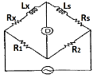
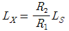
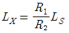
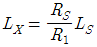
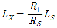
(정답률: 67%)
20. 코일에 그림과 같은 방향으로 유도 전류가 흘렀을 때 자석의 이동방향은?(오류 신고가 접수된 문제입니다. 반드시 정답과 해설을 확인하시기 바랍니다.)
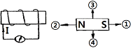
- 1의 방향
- 2의 방향
- 3의 방향
- 4의 방향
(정답률: 62%)
2과목: 전기 기기
21. 각각 계자 저항기가 있는 직류분권 전동기와 직류분권 발전기가 있다. 이것을 직렬로 하여 전동 발전기로 사용하고자 한다. 이것을 가동할 때 계자 저항기의 저항은 각각 어떻게 조정하는 것이 가장 적합한가?
- 전동기 : 최대, 발전기 : 최소
- 전동기 : 중간, 발전기 : 최소
- 전동기 : 최소, 발전기 : 최대
- 전동기 : 최소, 발전기 : 중간
(정답률: 65%)
22. 변압기에서 V결선의 이용률은?
- 0.577
- 0.707
- 0.866
- 0.977
(정답률: 66%)
23. 권수비가 100의 변압기에 있어 2차 쪽의 전류가 103[A]일 때, 이것을 1차 쪽으로 환산하면 얼마인가?
- 16[A]
- 10[A]
- 9[A]
- 6[A]
(정답률: 79%)
24. SCR의 특성 중 적합하지 않은 것은?
- pnpn 구조로 되어있다.
- 정류 작용을 할 수 있다.
- 정방향 및 역방향의 제어특성이 있다.
- 고속도의 스위칭 작용을 할 수 있다.
(정답률: 66%)
25. 1차 전압이 13200[V], 2차 전압 220[V]의 단상 변압기의 1차에 6000[V]의 전압을 가하면 2차 전압은 몇 [V]인가?
- 100
- 200
- 1000
- 2000
(정답률: 69%)
26. 단상 유도 전압 조정기의 단락 권선의 역할은?
- 철손 경감
- 절연보호
- 전압조정용이
- 전압 강하 경감
(정답률: 53%)
27. 동기 발전기의 전기자 권선을 단절권으로 하면?
- 역률이 좋아진다.
- 절연이 잘된다.
- 고조파를 제거한다.
- 기전력을 높인다.
(정답률: 62%)
28. 부하의 변화가 있어도 그 단자 전압의 변화가 작은 직류 발전기는?
- 가동 복권 발전기
- 차동복권 발전기
- 직권 발전기
- 분권 발전기
(정답률: 33%)
29. 단락비가 큰 동기 발전기를 설명하는 일 중 틀린 것은?
- 동기 임피던스가 작다.
- 단락 전류가 크다.
- 전기자 반작용이 크다.
- 공극이 크고 전압 변동률이 작다.
(정답률: 62%)
30. 변압기 내부 고장 보호에 쓰이는 계전기는?
- 접지 계전기
- 차동 계전기
- 과전압 계전기
- 역상 계전기
(정답률: 74%)
31. 자기소호 기능이 가장 좋은 소자는?
- SCR
- GTO
- TRIAC
- LASCR
(정답률: 72%)
32. 직류 직권 전동기에서 벨트를 걸고 운전하면 안 되는 이유는?
- 벨트가 벗겨지면 위험속도로 도달하므로
- 손실이 많아지므로
- 직결하지 않으면 속도 제어가 곤란하므로
- 벨트의 마멸 보수가 곤란하므로
(정답률: 83%)
33. 다음은 직권 전동기의 특징이다. 틀린 것은?
- 부하전류가 증가할 때 속도가 크게 감소된다.
- 전동기 기동시 기동 토크가 작다.
- 무부하 운전이나 벨트를 연결한 운전은 위험하다.
- 계자권선과 전기자 권선이 직렬로 접속되어있다.
(정답률: 62%)
34. 변압기의 1차측이란?
- 고압측
- 저압측
- 전원측
- 부하측
(정답률: 75%)
35. 전선의 굵기를 측정하는 공구는?
- 권척
- 메거
- 와이어 게이지
- 와이어 스트리퍼
(정답률: 82%)
36. 전기자를 고정시키고 자극 N, S를 회전시키는 동기 발전기는?
- 회전 계자법
- 직렬 저항법
- 회전 전기자법
- 회전 정류자형
(정답률: 66%)
37. 유도 전동기에서 슬립이 1이면 전동기의 속도 N은?
- 동기 속도보다 빠르다.
- 정지이다.
- 불변이다.
- 동기속도와 같다.
(정답률: 63%)
38. 가공전선로의 지지물에 시설하는 지선에서 맞지 않는 것은?
- 지선의 안전율은 2.5이상일 것
- 지선의 안전율은 2.5이상일 것, 이 경우 인장 하중은 440[Kg]으로 한다.
- 소선의 지름이 1.6[㎜]이상의 동선을 사용할 것
- 지선에 연선을 사용할 경우에는 소선 3가닥 이상의 연선일 것
(정답률: 64%)
39. 가요 전선관 공사에서 가요 전선관의 상호 접속에 사용하는 것은?
- 유니언 커플링
- 2호 커플링
- 콤비네이션 커플링
- 스플릿 커플링
(정답률: 63%)
40. 동기기의 3상 단락곡선이 직선이 되는 이유는?
- 무부하 상태이므로
- 자기 포화가 있으므로
- 전기자 반작용 이므로
- 누설 리액턴스가 크므로
(정답률: 44%)
3과목: 전기 설비
41. 3상 농형 유도 전동기의 속도 제어는 주로 어떤 제어를 사용하는가?
- 사이리스터 제어
- 2차 저항제어
- 주파수 제어
- 계자 제어
(정답률: 48%)
42. 유도 전동기의 Y-Δ 기동시 기동 토크와 기동 전류는 전전압 기동시의 몇 배가 되는가?
- 1/√3
- √3
- 1/3
- 3
(정답률: 49%)
43. 직류 스테핑 모터(DC stepping motor)의 특징 설명 중 가장 옳은 것은?
- 교류 동기 서보 모터에 비하여 효율이 나쁘고 토크 발생도 작다.
- 이 전동기는 입력되는 각 전기 신호에 따라 계속하여 회전한다.
- 이 전동기는 일반적인 공작 기계에 많이 사용된다.
- 이 전동기의 출력을 이용하여 특수기계의 속도, 거리, 방향 등을 정확하게 제어가 가능하다.
(정답률: 65%)
44. 합성수지 전선관 공사에서 하나의 관로 직각 곡률 개소는 몇 개소를 초과하여서는 안 되는가?
- 2개소
- 3개소
- 4개소
- 5개소
(정답률: 37%)
45. 비교적 장력이 적고 타 종류의 지선을 시설할 수 없는 경우에 적용되는 지선은?
- 공동지선
- 궁지선
- 수평지선
- Y지선
(정답률: 68%)
46. 화약류 저장장소의 배선공사에서 전용 개폐기에서 화약류 저장소의 인입구까지는 어떤 공사를 하여야 하는가?
- 케이블을 사용한 옥측 전선로
- 금속관을 사용한 지중 전선로
- 케이블을 사용한 지중 전선로
- 금속관을 사용한 옥측 전선로
(정답률: 70%)
47. 220[V] 전선로에 사용하는 과전류 차단기용 퓨즈가 견디어야 할 전류는 정격전류의 몇 배인가?
- 1.5
- 1.25
- 1.2
- 1.1
(정답률: 61%)
48. 3.2[㎜]이상의 굵은 단선의 분기 접속은 어떤 접속을 하여야 하는가?
- 브리타니아 접속
- 쥐꼬리 접속
- 트위스트 접속
- 슬리브 접속
(정답률: 68%)
49. 애자 사용공사에 의한 저압 옥내배선에서 잘못된 것은?
- 600[V] 비닐 절연 전선을 사용한다.
- 전선 상호간의 거리가 6[㎝]이다.
- 전선과 조영재 사이의 이격 거리는 사용전압이 400[V]미만인 경우에는 5.5[㎝]이상일 것
- 절연성, 내연성 및 내구성이 있어야 한다.
(정답률: 62%)
50. 전압계, 전류계 등의 소손 방지용으로 계기 내에서 장치하고 봉입하는 퓨즈는 어느 것인가?
- 통형퓨즈
- 판형퓨즈
- 온도퓨즈
- 텅스텐퓨즈
(정답률: 60%)
51. 1.6[㎜] 19가닥의 경동연선의 바깥지름[㎜]은?
- 11
- 10
- 9
- 8
(정답률: 38%)
52. 옥내 배선공사에서 대지전압 150[V]를 초과하고 300[V]이하 저압 전로의 인입구에 반드시 시설해야 하는 지락차단 장치는?
- 퓨즈
- 누전차단기
- 배선용 차단기
- 커버나이프 스위치
(정답률: 63%)
53. 점유 면적이 좁고 운전 보수에 안전하며 공장, 빌딩 등의 전기실에 많이 사용되는 배전반은 어떤 것인가?
- 데드 프런트형
- 수직형
- 큐비클형
- 라이브 프런트형
(정답률: 63%)
54. 금속관 배관공사에서 절연 부싱을 사용하는 이유는?
- 박스 내에서 전선의 접속을 방지
- 관이 손상되는 것을 방지
- 관 단에서 전선의 인입 및 교체시 발생하는 전선의 손상방지
- 관의 인입구에서 조영재의 접속을 방지
(정답률: 63%)
55. 교류 전등 공사에서 금속관 내에 전선을 넣어 연결한 방법 중 옳은 것은?
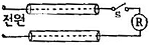
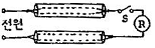
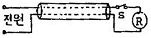
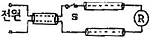
(정답률: 68%)
56. 급·배수 회로 공사에서 탱크의 유량을 자동 제어하는데 사용되는 스위치는?
- 리밋 스위치
- 플로트레스 스위치
- 텀블러 스위치
- 타임 스위치
(정답률: 49%)
57. 1차가 22.9[KV-Y]의 배전선로이고, 2차가 220/380[V] 부하 공급시는 변압기 결선을 어떻게 하여야 하는가?
- Δ-Y
- Y-Δ
- Y-Y
- Δ-Δ
(정답률: 40%)
58. 다음 중 알루미늄 전선의 접속 방법으로 적합하지 않은 것은?
- 직선 접속
- 분기 접속
- 종단 접속
- 트위스트 접속
(정답률: 64%)
59. 박스 안에서 가는 전선을 접속할 때에 어떤 접속으로 하는가?
- 슬리브 접속
- 브리타니어 접속
- 쥐꼬리 접속
- 트위스트 접속
(정답률: 78%)
60. 선로의 도중에 설치하여 회로에 고장 전류가 흐르게 되면 자동적으로 고장 전류를 감지하여 스스로 차단하는 차단기의 일종으로 단상용과 3상용으로 구분되어 있는 것은?
- 리클로저
- 선로용 퓨즈
- 섹셔널 라이저
- 자동구간 개폐기
(정답률: 43%)
양전하를 많이 가진 물질은 전위가 낮은 이유는 전위는 전하의 이동에 필요한 일종의 에너지 차이를 나타내는 것이기 때문입니다. 양전하를 많이 가진 물질은 이미 전하가 많이 모여있기 때문에 전하를 더 이동시키기 위한 에너지 차이가 적어져 전위가 낮아집니다.
1초 동안에 1[C]의 전기량이 이동하면 전류는 1[A]이며, 전류의 방향은 전자의 이동방향과는 반대방향으로 정합니다.